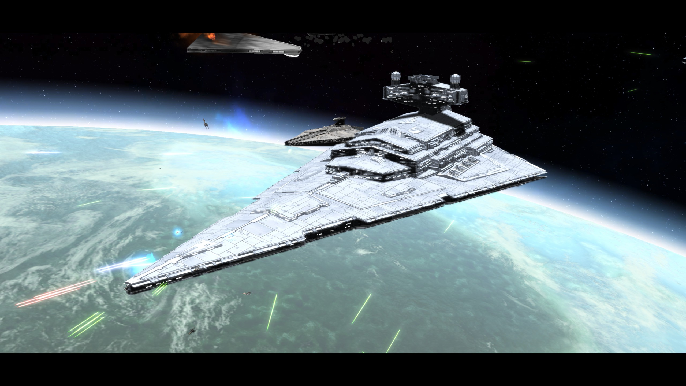
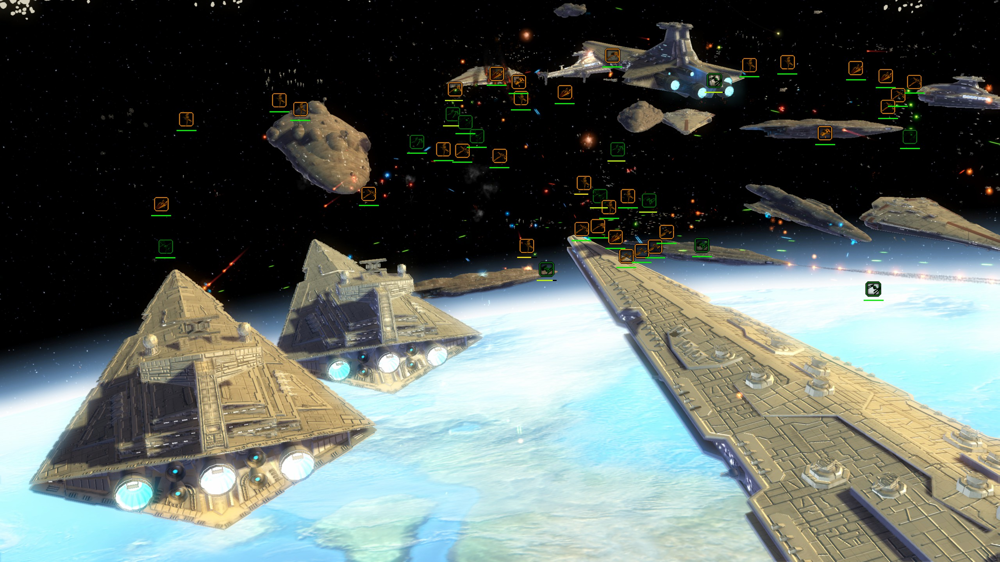
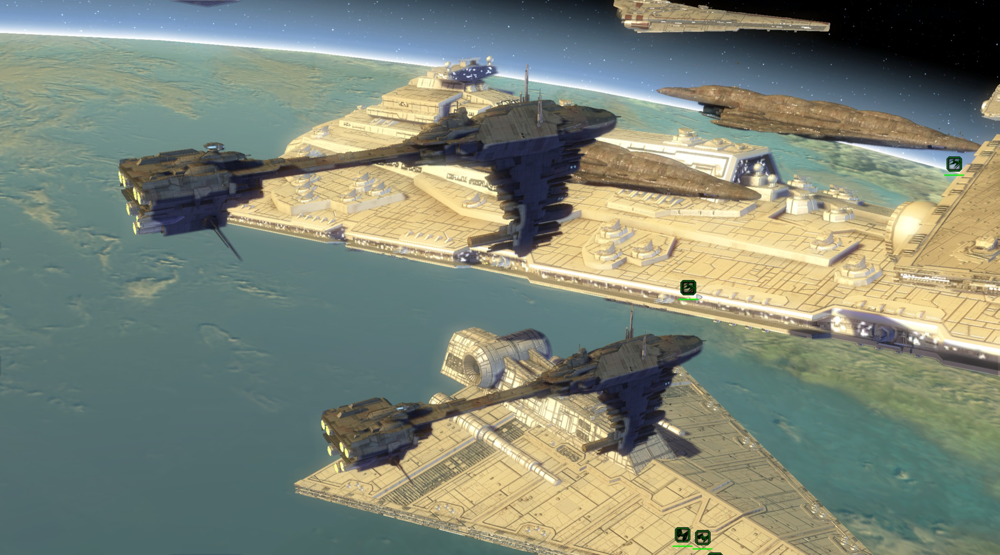

Thrawn's Revenge
The death of the Emperor has left the galaxy in disarray - command one of 8 playable factions as they strive to establish themselves as the next galactic power, with an array of new units, heroes, planets and scenarios with extra story-driven content, and new mechanics inspired by 4X and Grand Strategy titles. New and updated content is added monthly. In addition to Thrawn's Revenge, we make a Clone Wars mod with similar features, Fall of the Republic.
  